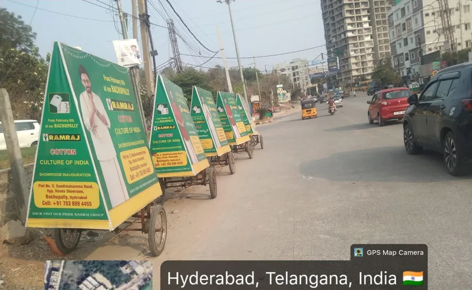

Sampling & demo activities
Sampling counters, product demos and trial experiences in malls, retail and residential catchments.
BTL marketing · BTL activation
Below-the-line marketing is direct, local and visible on the ground. Equestrian Media plans and executes BTL marketing campaigns — BTL activation, sampling, promotional fleets and mobile media — for brands that need presence in a specific market, not a national average.
BTL activation
Hyderabad | Telangana | Andhra Pradesh Fleets and promoters we operate ourselves.
BTL marketing puts the brand in a physical place — a mall atrium, a residential colony, a market road, a cinema foyer — and speaks to the people actually there. Compared with mass media, BTL activation gives a brand control over where, when and to whom it appears, and lets it change route or message mid-campaign.
Equestrian Media runs BTL marketing campaigns across Hyderabad, Telangana and Andhra Pradesh with formats we operate ourselves — tricycle and look-walker teams, LED vans and Tata Ace vehicles, auto-top and sticker fleets, sampling counters and mall activations — so routes and dates are decided by us, not by a subcontractor.
Every campaign is planned against a brief — objective, audience, geography and dates — then executed with our own manpower and supervision, with photo reporting so you can see the activation rather than read about it.
BTL formats
The BTL activation and promotional formats we operate — from the Equestrian Media media kit.
Sampling counters, product demos and trial experiences in malls, retail and residential catchments.
Branded tricycle fleets covering about 5 km over 7 hours a day through markets and colonies.
Branded promoters and look walkers for street-level visibility and hand-outs at footfall points.
Auto-top and sticker branding across fleets of 500+ autos, concentrated in one area for saturation.
Mobile LED and branded vehicles running 70 km routes, 8 hours a day, with stops at activation points.
In-store and in-mall promotions, kiosks and atrium displays that close the loop at the point of sale.

On the ground
A BTL marketing campaign is only as good as its coverage. Tricycle and look-walker teams work fixed routes through residential and market areas, LED vans take the message along arterial roads and into evening residential windows, and auto fleets keep it moving all day.
Because Equestrian Media operates these fleets directly, routes can be re-planned mid-campaign, and every deployment comes back with dated photographs from the route.
5 km
Tricycle / look-walker daily coverage
70 km
LED van and Tata Ace daily route
500+
Autos per branding fleet
8 hrs
Vehicle operating time per day
Figures from the Equestrian Media media kit; not independently verified.
How we work
How a BTL activation campaign is planned and run.
Objective, audience and the specific areas, routes or venues to cover.
The combination of activation, fleet and mobile media that fits the budget and dates.
Production, manpower briefing, permissions and supervised execution on the ground.
Dated route and activation photographs, plus learnings for the next wave.
Why Equestrian Media
Why brands run their BTL marketing campaigns with Equestrian Media.
Tricycles, vehicles, promoters and supervisors operated by our team.
Hyderabad, Telangana and Andhra Pradesh markets we cover every week.
From a single tricycle route to a multi-format city campaign.
BTL activation combined with mall, cinema, DOOH and outdoor advertising.
Questions
Related services
Below-the-line (BTL) marketing is direct, targeted promotion that reaches people in a specific place rather than through mass media — activations, sampling, promotional fleets, mobile media and local outdoor. Brands use BTL marketing campaigns when they need visibility in a defined market and want to see the execution.
Brand activation is one kind of BTL marketing — the experiential, walk-up-to-it kind. A BTL marketing campaign can also include tricycle and look-walker promotions, auto branding, LED van routes, wall posters and sampling, often combined so the brand is seen in several ways in one area.
Small enough to test an area. A tricycle or look-walker team covers about 5 km a day and is booked by the day, so one route in one locality is a realistic first campaign. From there it scales to Tata Ace or T-shape auto routes of 70 km a day, booked by the month. Share the brief and we will quote for it.
Across Hyderabad first, and Telangana and Andhra Pradesh more widely. Because we operate the fleets and manpower ourselves, a campaign can move between residential colonies, market roads and mall environments as the brief requires.
Strategize Activate Elevate